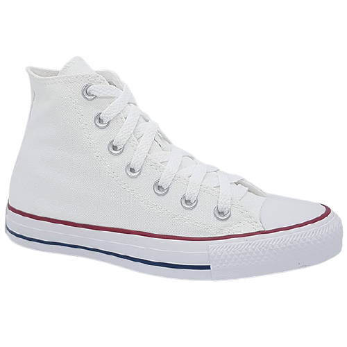

see the trends of tennis shoes models that will be used in 2023
As the world of tennis continues to evolve and innovate, so too does its sense of style. From vintage-inspired looks to bold, eye-catching designs, the sport's fashion trends are always changing and evolving. In this blog, we'll take a closer look at some of the hottest fashionable tennis trends to watch in 2023, and explore how they are shaping.
Bad Bunny's limited edition tennis shoes
"The First Café"
Bad Bunny's tennis shoes, officially known as "The First Café" by Bad Bunny x Adidas Originals, were released in March 2021. The shoes feature a unique design that incorporates a mix of textures and patterns, including suede, leather, and mesh. They also come in a vibrant orange colorway with green accents, which is a nod to Bad Bunny's favorite colors. The First Café shoes are not only stylish but also comfortable, thanks to their cushioned insole and lightweight construction. They are part of a larger collection of Bad Bunny x Adidas Originals merchandise, which includes tracksuits, T-shirts, and other accessories.
Platform shoes are a versatile and stylish footwear option that can elevate any outfit.
Platform shoes are shoes with thick soles that elevate the wearer's feet several inches off the ground. The soles can be made from various materials, including cork, rubber, and wood, and can be flat or have a heel. Platform shoes have been popular for centuries, dating back to ancient Greece and Rome, but they gained widespread popularity in the 1970s as part of the disco fashion trend. Today, platform shoes continue to be a popular fashion choice for both women and men, and are available in a variety of styles, including sandals, boots, sneakers, and dress shoes. They can be worn for both casual and formal occasions, and are often designed with bold colors, prints, and embellishments to make a statement. While platform shoes are often associated with retro or vintage fashion, they remain a versatile and stylish choice for those looking to add a bit of height and edge to their outfits.
Busenitz tennis shoes are a popular line of skate shoes designed by Adidas in collaboration with professional skateboarder Dennis Busenitz

Busenitz tennis shoes are a line of skate shoes designed by Adidas in collaboration with professional skateboarder Dennis Busenitz. The shoes are known for their durability and performance on the skateboard, as well as their stylish design. Busenitz tennis shoes feature a suede upper with reinforced stitching and a rubber outsole for added grip and traction. The shoes also have a unique design with a low profile and a slim silhouette, making them both functional and fashionable. In addition to their technical features, Busenitz tennis shoes come in a variety of colors and designs to suit different styles and preferences. They are a popular choice among skateboarders and sneaker enthusiasts alike, and are often worn as casual everyday shoes as well. Overall, Busenitz tennis shoes are a well-regarded product that embodies the intersection of skateboarding and fashion.
the famous all star
All Star tennis shoes, also known as Converse All Stars, are a popular line of sneakers produced by Converse. Originally designed in 1917 as basketball shoes, All Stars have since become an iconic fashion staple worn by people of all ages and styles. All Star tennis shoes feature a simple canvas upper, rubber toe cap, and a vulcanized rubber sole for added durability and comfort. They are available in a range of colors and designs, from classic white and black to bold patterns and collaborations with popular brands and artists. In addition to their timeless design, All Star tennis shoes are also known for their versatility and ability to pair well with a wide range of outfits, from casual streetwear to more formal attire. Overall, All Star tennis shoes continue to be a beloved and iconic sneaker choice for those looking for a classic and stylish footwear option
Running shoes are an essential piece of equipment for anyone who likes to run and dress casually
Running shoes are specialized shoes designed for running and other high-impact activities. but they also fit very well in casual fashion and are often worn by young people to feel more comfortable and casual.